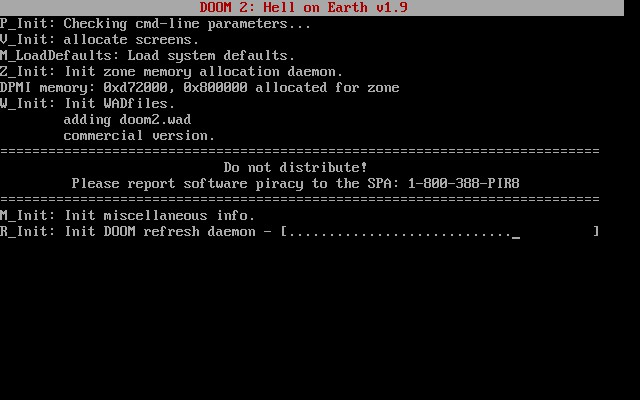

Uno de mis hobbies o pasatiempos favoritos son los videojuegos, en especial me gustan mucho los que son del tipo shooter, entre los cuales destaca uno de mis favoritos desde que tenía 4 años, Doom
.
Cuando era niño, en mi casa teníamos una computadora un poco antigua, esta era de marca IBM, contaba con un procesador muy pobre para la época actual pero en ese entonces era lo mejor, el teclado era mecánico y su mouse era de bolita
. Mi padre una vez llegó con una caja de floppy disks a los cuáles yo procedí a echarles un vistazo, de ahí saqué varios que me llamaron la atención por su nombre, los inserté en la computadora y procedí a investigar qué era lo que contenía cada uno.
Hubo uno que me llamó la atención, debido a que al ejecutar su contenido me mostraba lo siguiente:
Debido a que de niño era muy curioso, dejé que se instalara, lo cual tomaba varios floppy disks, insertaba uno tras otro y así empezaba mi primera instalación de un software sin saberlo ni tener la conciencia de eso. Despúes de la carga de la pantalla en negro con letras blancas que tanto me fascinó de niño, recibí en mios ojos una imagen impactante, demaisado nítida para mí en esa época, y sobre todo en las bocinas sonó un tema impactante para mis oídos. Quedé cautivado con la primera mirada hacia Doom.
No sabía qué hacer, me quedé admirando esa pantalla durante un tiempo, después pulsé la tecla ENTER, un menú que jamás había visto en mi vida se desplegó diciendo lo siguiente:
En el menú se encontraba como selector un cráneo con las cuencas de los ojos rojos, todo me estaba fascinando sin ni siquiera saber el por qué exactamente. Seleccioné New Game
y otro menú apareció, en donde podía seleccionar los niveles de dificultad:
Acto seguido, comencé a jugar, era un cuarto amplio con una entrada iluminada, enfrente de mi se encontraban dos sujetos de espaldas, los cuales al momento de presionar por accidente CTRL y activarse el arma que tenía en la mano del personaje, voltearon enseguida y comenzaron a deambular y a dispararme ocasionalmente...
¡Y así comenzó la historia entre un humano y su videojuego favorito de todos los tiempos!
Esta aberración de aquí fue de las que más temor me causó de pequeño, su nombre es Pain Elemental.
Ahhh... La música...
Sin duda alguna se me ha hecho indispensable contar con audífonos a la mano, desde niño me ha encantado la música, esa extraña y mágica sensación de sentir el ritmo entrar por mis oídos y que mi cuerpo o mi cabeza me guíe, es indudablemente asombroso.
El primer género de música que marcó un impacto en mí fue el rap, en ese entonces se encontraba muy de moda el artista Porta, y a menudo escuchaba varios de sus temas.
Después, mientras jugaba Tony Hawk: Pro Skater 3 en la cinemática de inicio una voz rasposa y un riff de guitarra rápida y violenta retumbó en mis oídos, ahí fue cuando empezó mi contacto y fascinación por el rock y el metal, había escuchado la canción Ace of Spades del grupo Motörhead.
El ex-bajista de una de mis bandas favoritas, Motörhead, junto a su bestial y potente bajo, juntos hacían que el bajo fuera más que solo para punteo.
Cover magnífico de la canción Enter Sandman de la banda Metallica. En el humor de YouTube se dice que si Lemmy Kilmister hizo un cover de tu canción, ya no es tu canción.
De forma general, me suele gustar lo pesado, esto incluye a bajos muy graves e intensos o riffs muy pesados, también en el dubstep me gustan mucho los drops pesados y ensordecedores.
Este es un ejemplo:
También suelo dibujar de vez en cuando, me gusta mucho expresar mis sentimientos a través del dibujo.
Normalmente dibujo más cuando me siento frustrado, o cuando me siento triste o enojado, pero también dibujo cuando me encuentro feliz y también cuando se me ocurre algo extraño en la mente.